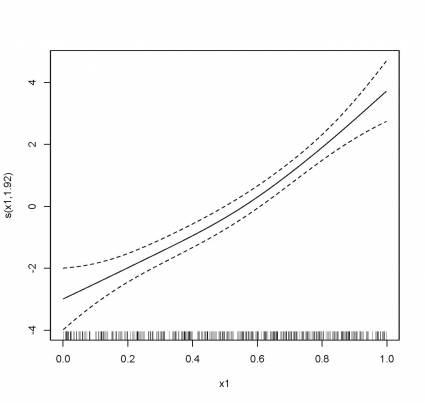
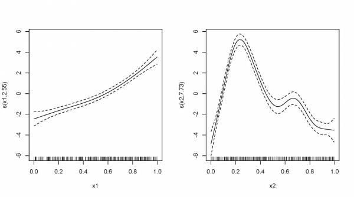

Chapitre 5 Plusieurs termes non linéaires
Avec les GAMs, il est facile d’ajouter des termes non linéaires et
linéaires dans un seul modèle, plusieurs termes non linéaires ou même
des interactions non linéaires. Dans cette section, nous allons utiliser
un ensemble de données générées automatiquement par mgcv.
Nous allons voir comment nous pouvons prédire la variable réponse y en
fonction des autres variables. Commençons par un modèle de base
comprenant un terme non linéaire (x1) et un facteur qualitatif (X0 avec
4 niveaux).
basic_model = gam(y ~ x0 + s(x1), data = gam_data)
basic_summary = summary(basic_model)
print(basic_summary$p.table)
print(basic_summary$s.table)
plot(basic_model)Ici, la sortie de p.table fournit le tableau de résultats pour chaque
terme paramétrique et le tableau s.table nous donne les résultats du
terme non linéaire. Notez que pour le second tableau, la courbure du
terme non linéaire s(X1) est indiquée par le paramètre edf (degrés de
libertés effectifs); plus la valeur de l’edf est élevée, plus la
non-linéarité est forte. Une valeur élevée (8-10 ou plus) signifie que
la courbe est fortement non linéaire, alors qu’une courbe avec un edf
égal à 1 est une ligne droite. En revanche, dans la régression linéaire,
les degrés de libertés du modèle sont équivalents au nombre de
paramètres libres non redondants p dans le modèle (et les degrés de
libertés résiduels sont égaux à n-p). Nous reviendrons plus tard sur
le concept d’edf.
print(basic_summary$p.table)
Estimate Std. Error t value Pr(>|t|)
(Intercept) 8.550030 0.3655849 23.387258 1.717989e-76
x02 2.418682 0.5165515 4.682364 3.908046e-06
x03 4.486193 0.5156501 8.700072 9.124666e-17
x04 6.528518 0.5204234 12.544629 1.322632e-30
> print(basic_summary$s.table)
edf Ref.df F p-value
s(x1) 1.923913 2.406719 42.84268 1.076396e-19Dans notre modèle de base, l’edf du terme non linéaire s(x1) est ~ 2,
ce qui indique une courbe non linéaire. Le graphique du modèle illustre
bien la forme de ce terme non linéaire :

Nous pouvons ajouter un second terme x2, mais spécifier une relation
linéaire avec Y (i.e. les GAMs peuvent inclure à la fois des termes
linéaires et non linéaires dans le même modèle). Ce nouveau terme
linéaire x2 sera présenté dans le tableau p.table, pour lequel une
estimation du coefficient de régression sera indiquée. Dans le tableau
s.table, nous retrouvons encore une fois le terme non linéaire s(x1)
et son paramètre de courbure.
two_term_model <- gam(y ~ x0 + s(x1) + x2, data = gam_data)
two_term_summary <- summary(two_term_model)
print(two_term_summary$p.table)
print(two_term_summary$s.table)Pour évaluer si la relation entre y et x2 est non linéaire, on peut
modéliser x2 avec une fonction non linéaire. Tel que vu auparavant, nous
pouvons utiliser une ANOVA pour tester si le terme non linéaire est
nécessaire.
two_smooth_model <- gam(y ~ x0 + s(x1) + s(x2), data = gam_data)
two_smooth_summary <- summary(two_smooth_model)
print(two_smooth_summary$p.table)
print(two_smooth_summary$s.table)
plot(two_smooth_model, page = 1)
Lorsqu’il y a plus d’une variable d’incluse dans le modèle, comme ci-dessus, la réponse ajustée peut-être partitionnée entre les contributions de chaque variable. Ici, nous pouvons évaluer l’effet de chaque variable où l’axe des ordonnées représente la contribution (effet) de chaque covariable à la réponse ajustée centrée sur 0. Si l’intervalle de confiance chevauche zéro pour certaines valeurs de x, cela indique que l’effet est non significatif. Lorsque la contribution varie selon l’axe x, un changement de cette variable cause un changement de la variable réponse.
Analysis of Deviance Table
Model 1: y ~ x0 + s(x1)
Model 2: y ~ x0 + s(x1) + x2
Model 3: y ~ x0 + s(x1) + s(x2)
Resid. Df Resid. Dev Df Deviance Pr(>Chi)
1 394.08 5231.6
2 393.10 4051.3 0.97695 1180.2 < 2.2e-16 ***
3 385.73 1839.5 7.37288 2211.8 < 2.2e-16 ***
---
Signif. codes: 0 ‘***’ 0.001 ‘**’ 0.01 ‘*’ 0.05 ‘.’ 0.1 ‘ ’ 1Le meilleur modèle est le modèle avec deux fonctions non linéaires pour
x1 et pour x2.
5.1 DÉFI 2
Créez deux nouveaux modèles avec la variable x3 : un modèle avec x3
comme paramètre linéaire et un autre modèle avec x3 avec un paramètre
non linéaire. Utilisez des graphiques, les tables des coefficients et la
fonction anova() afin de déterminer s’il est nécessaire d’inclure x3
dans le modèle.
5.1.1 Réponse au défi 2
three_term_model <- gam(y ~ x0 + s(x1) + s(x2) + x3, data = gam_data)
three_smooth_model <- gam(y ~ x0 + s(x1) + s(x2) + s(x3), data = gam_data)
three_smooth_summary <- summary(three_smooth_model)
print(three_smooth_summary$p.table)
print(three_smooth_summary$s.table)
plot(three_smooth_model, page = 1)
# edf = 1 -> le terme est donc linéaire.
anova(two_smooth_model, three_term_model, test = "Chisq")
# le terme x3 n'est pas significatif